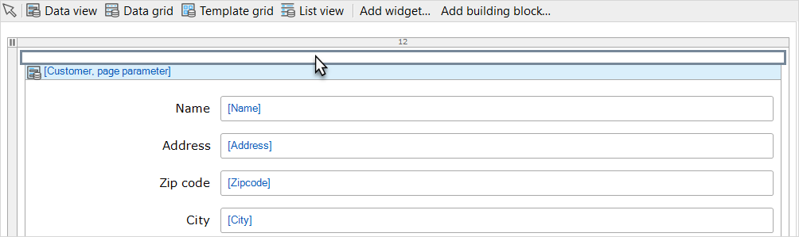
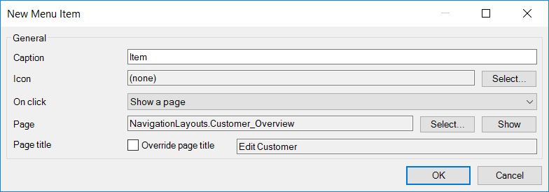
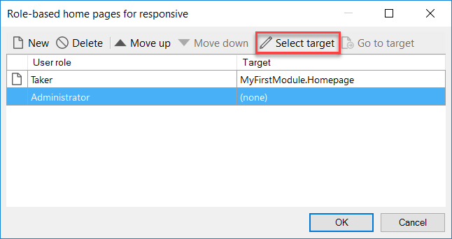
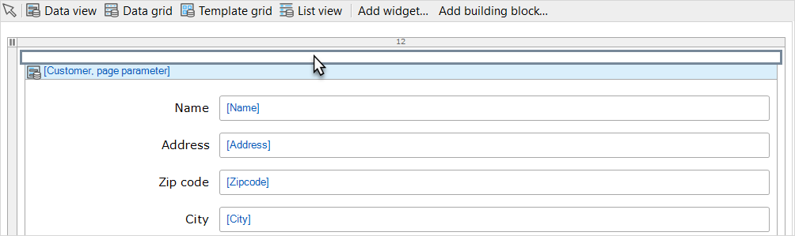
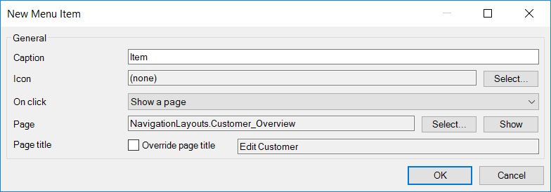
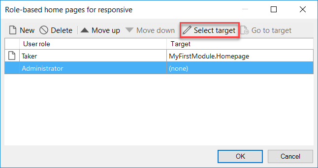

Про компанію
Jabil Healthcare — це глобальний постачальник виробничих рішень, який співпрацює з провідними брендами в різних сферах охорони здоров’я. Команда Medical Devices спеціалізується на розробці та виробництві широкого спектру продуктів, включаючи мінімально інвазивні пристрої, рішення для контролю крові, кардіологічне обладнання, системи моніторингу пацієнтів і неврологічні пристрої. Команда досягає успіхів у дизайні, розробці, впровадженні нових продуктів (NPI), оснащенні інструментами, лиття під тиском, робототехніці та управлінні ланцюгом поставок. Примітно, що досвід Jabil у таких сферах, як роботизована хірургія та мінімально інвазивні пристрої, встановлює новий стандарт, демонструючи складну вертикальну інтеграцію технологій і процесів.
У сфері діагностики Jabil Healthcare співпрацює з провідними брендами для розробки та розробки складних діагностичних продуктів у геноміці та прецизійній медицині. Завдяки прогресу в обчислювальних технологіях, зборі даних і хімічному аналізі Jabil робить внесок у розробку менш інвазивних процедур, таких як рідкі біопсії, задовольняючи зростаючий попит на дистанційне тестування та діагностику в місці необхідності. Команда Pharmaceutical Delivery Systems (PDS) зосереджується на ін’єкційних препаратах та інгаляторах у співпраці з провідними фармацевтичними брендами. Їх мета — постійно розвивати зручні та надійні рішення для доставки ліків, пропонуючи комфорт і впевненість клієнтам. Jabil Healthcare представляє автоінжектор Qfinity™, економічний пристрій багаторазового використання з екологічно безпечною моделлю.
У сфері охорони здоров’я Jabil визнає зростаючу тенденцію, коли люди контролюють своє здоров’я за допомогою пристроїв, що носяться. Ці пристрої варіюються від регульованих до нерегульованих, включаючи фітнес-трекери, розумні ортопедичні вироби та тканини з гнучкою друкованою електронікою. Участь Jabil в інноваційних проектах, таких як молоковідсмоктувач Elvie, є прикладом їхньої відданості елегантним і зручним для споживача продуктам. Для ортопедичних рішень провідні бренди в ортопедії співпрацюють з Jabil для виробництва хірургічних рішень для травм, суглобів, хребта та черепно-щелепно-лицевих (CMF). Від швидкого прототипування з використанням адитивного виробництва до великосерійного виробництва та ретельних процедур тестування на відповідність нормативним вимогам, Jabil Healthcare надає повний набір можливостей на ринку ортопедії. Нарешті, команда Jabil Healthcare Innovation & Development (JHID) співпрацює з надійними брендами охорони здоров’я для вирішення складних проблем дизайну та розробки продуктів. Маючи доступ до понад 3000 експертів зі стратегії, досліджень, дизайну, технологій та інженерії, JHID прагне стимулювати стратегічні інновації, покращувати дизайн, зменшувати ризики та забезпечувати ефективне та результативне виробництво продуктів охорони здоров’я.
Сфери виготовлення продукції
Завдання
- Розуміння застосування методології Agile, Scrum у розробці додатку.
- Ознайомлення з платформою розробки Mendix та створення проекту, що служить соціальним модулем для підприємства.
- Участь у розробці більш масштабного проекту, що слугує базою даних усіх компʼютерів та приладів, що знаходяться у власності компанії. Відображення основних критеріїв та властивостей цих приладів та їх фільтрація. Особливою вимогою було володіння англійською мовою на рівні С1, оскільки компанія розташована в США
Хід розв‘язання
Adile & Scrum
Agile - це методологія управління проектами, яка ставить акцент на гнучкість, спроможність швидко адаптуватися до змін і взаємодію з замовником протягом усього процесу розробки. Основні принципи Agile включають ітеративність, колективну роботу, визнання змін як корисних і готовність до швидкої реакції на зміни вимог.
Основні принципи Agile:
- Ітеративність і інкрементальність: Робота проводиться в коротких ітераціях (спробах), на кожній з яких створюється новий інкремент функціональності.
- Співпраця із замовником та комунікація: Замовник і команда розробки регулярно спілкуються і співпрацюють протягом всього процесу розробки.
- Змінність вимог: Процес Agile визнає, що вимоги можуть змінюватися, і надає механізми для ефективного впорядкування цих змін.
- Спрощена документація: Замість обширної документації акцент робиться на робочому продукті, інтеракції та співпраці.
Scrum - це конкретна ітеративна реалізація Agile, яка визначає ролі, події та артефакти для ефективного управління проектами.
Основні складові Scrum:
-
-
Команди:
- Scrum Master: Відповідає за впровадження методології Scrum і забезпечує, щоб команда дотримувалася встановлених правил.
- Product Owner: Представник замовника, визначає вимоги та пріоритети для продукту.
- Розробники (Development Team): Команда, яка реалізує роботу.
-
-
Події:
- Спринт (Sprint): Фіксований термін, протягом якого команда виконує певну кількість роботи.
- Спринт-ретроспектива (Sprint Retrospective): Заключне обговорення команди після завершення спринту з метою покращення.
-
-
Артефакти:
- Product Backlog: Список всіх функціональностей, які можуть бути реалізовані у продукті.
- Sprint Backlog: Завдання, які мають бути виконані протягом поточного спринту.
- Increment: Результат роботи команди на кінець спринту, повинен бути готовий до впровадження.
Mendix application
Створення сторінки огляду та деталізації
Створення навігації
.jpg) 





Створення захищеного додатку